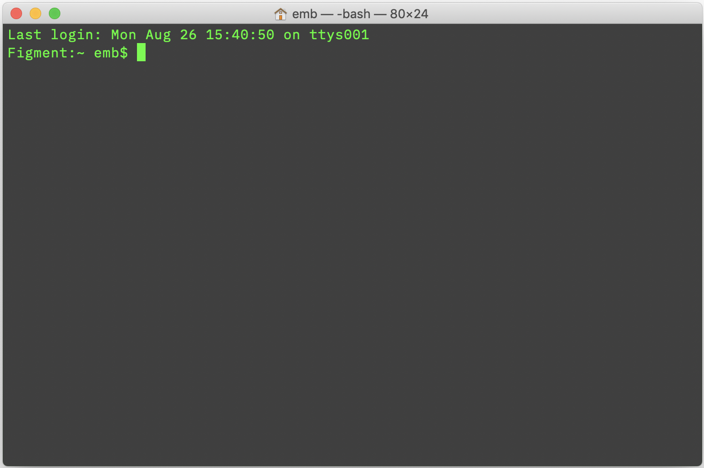
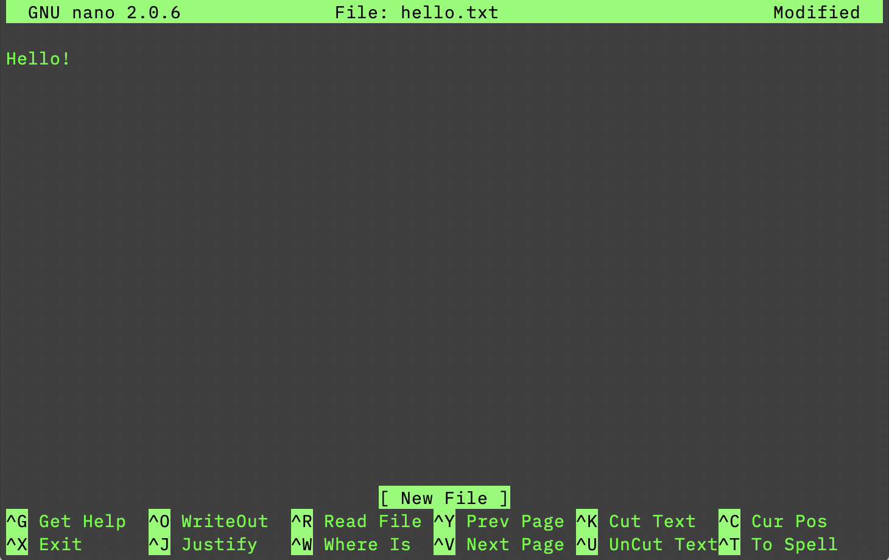

What is the command line?
Text-only interaction with a computer to issue commands.
Unix & Linux
- operating systems in which are typically based on a CLI
- very prevalent for computers hosting Internet servers
- macOS is Unix-based
- Linux is (essentially) an open-source, Unix-like OS
Unix Philosophy
Do one thing and do it well.
Shells 🥜
The shell "translates" our command for the computer to understand. There are multiple "flavors" which have different syntax, features:
- Bourne Again Shell (
bash)* - C Shell (
csh) - Korn Shell (
ksh) - Z Shell (
zsh)
* we will be using bash, the default shell and Linux
** the default shell in macOS Catalina (10.15) is zsh. To use bash, type bash at the prompt.
Cons
- Text only
- Does not have visual 'cues'
- Steeper learning curve
Pros
- Much faster, efficient
- Repetitive tasks can be scripted
- Expands software resources
- And...
Bonus
People think you're a hacker!
The Matrix (1999)
Accessing the Terminal (macOS)
Applications → Utilities → Terminal
The terminal will always open to your "home" folder.
The Prompt
$
The prompt awaits your input...
Help Commands
man command: display a commands 'manual' page
command --help: display a command's help screen
Navigating the Filesystem
pwd: display the present working directory
cd: open directory
ls: list files
mkdir: create a new directory
Working with Files
touch: create a new, empty file
mv: move a file
cp: copy a file
cat or less: show the contents of a file
Deleting Files & Directories
Warning! Deleting a file or directory using any of the following commands in permanent. There is no way to recover deleted files!
rm: delete a file
rm -rf *: Never type this command. It will delete everything.
Flags
Programs often have options which can be tacked on to a command to enhance the output. These are called 'flags.'
ls -la: list all files (including hidden ones) in long format
rm -rf directory: force the removal of a directory and all contents within
Wildcards
*: match any (zero or more) characters
Example: *all will match "all", "ball", "call", "small", but not "allegory".
?: match a single character
Example: ?all will match "ball" and "call", but not "all" or "small".
Directing Output
One of the features of the command line is that we can redirect where our output ends up. Instead of it displaying on-screen, we can save the output to a file or send it to another program.
>: redirects output to a new file (or overwrite an existing file)
>>: append output to an existing file
|: direct output from one program to another
Editors
A very common use of the command line is to edit text files. A user has many options to choose from, but it is recommended beginners use nano.
Other options include emacs and vi, which have very steep learning curves but are very powerful once understood.
nano

Permissions
Because Unix/Linux systems are often shared by multiple users, every file and directory has metadata which identifies who may read (r), write (w) or execute (x) that item.
Unix/Linux classifies a user as: you (u), a group member (g) or other/everyone (o).
We can combine this information to set file permissions.
Permissions: Commands
chmod: change permissions of a file, directory
chown: change ownership of a file, directory
Permissions: Symbolic Method
who +/- permission
u+wr: give the user read and write access (no execute)
o-rw: revoke read, write access for others
Permissions: Octal Method
We can also indicate permissions by adding numbers:
4: read2: write1: execute
The permission is three digits, with the hundreds column representing the user, tens for group and ones for all.
755: User has all access; group and others can read and execute
600: User has read, write access; group and others have no access
Utilities
clear: clear the screen
curl: transfer data from a URL
wc: word count (lines, words, characters)
whois: display domain name information
whoami: in case you forgot 🙂